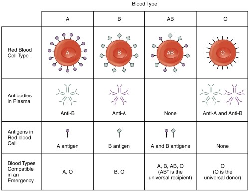
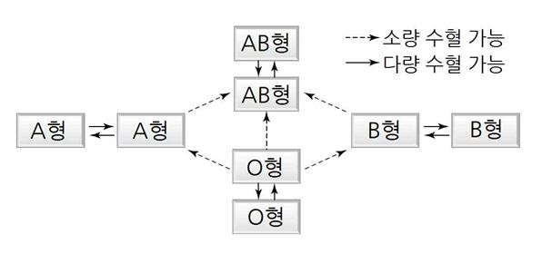
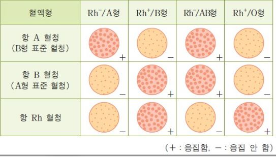

혈액
혈액은 유형성분인 적혈구, 백혈구, 혈소판과 이들을 부유시키고 있는 액체 성분인 혈장으로 구성된다.
혈액은 몸을 구성하는 세포생활에 없어서는 안되는 매질로 그 성질이나 상태는 거의 일정하게 유지되고 있다.
혈장은 각종 전해질이 포함되어 혈액의 교질삼투압의 유지, 정성, PH의 완충, 물질의 운반, 혈액 응고와 생긴 응고덩이 용해, 면역, 지질대사, 효소저해등 여러 기능을 담당한다.
적혈구, 백혈구, 혈소판이 함유된 혈구는 혈액속에 들어있는 세포를 말한다.
혈청은 응고과정을 거치며 혈장에서 섬유소원이 제거된 상태로서 알부민, 글로불린 등의 단백질을 비롯하여 여러가지 효소 단백질 등 생체의 기능유지에 필요한 여러가지 성분을 포함하고 있다.
혈액형
오스트리아 태생 미국의 면역학자이자 병리학자인 카를 칸트슈타이너가 빈 대학교에서 병리해부학과 조교로 활동하면서 사람 혈청에 차이가 있음을 발견하고 혈액형을 발견함으로써 치료 목적의 안전한 수혈을 가능하게 했으며, 친자 확인 문제에도 도움을 준다.
혈액형의 종류에는 ABO식 혈액형, Rh 혈액형, MN식 혈액형, li식 혈액형이 있다.
-ABO식 혈액형
혈액형을 적혈구 항원에 의해 분류하는 혈액형 분류법의 일종 A, B, AB, O의 4형으로 표현된다.
1901년 Landsteiner가 발견하였으며 수혈시 각 형의 일치성이 중요하다.
일정한 표현형(ABO식 혈액형)과 그에 관계가 있는 복대립 유전자(상염색체에 자리가 있는 IA, IB, I 3종이 있으며 IA, IB에는 우열이 없고 I에 대해서는 모두 우성), 응집원, 응집소, 수혈, 혈액형 판정 등 용이하다.

-수혈 관계도(AB형식 혈액형)

주는 사람의 응집원과 받는 사람의 응집소 사이에 응집반응이 일어나지 않으면 수혈 가능
-Rh식 혈액형(Rh+:DD,Dd/ Rh-:dd)
ABO식 혈액형은 1gM밖에 검출되지 않는다.
ABO식 혈액형은 1gM이 관여하는 혈액형이기 때문에 이 방법이 적합했지만,
1gG가 관여하는 혈액형은 검사할 수 없었고 1gG이 관여하는 혈액형에서 최초로 Rh 혈액형이 발견되었다.
Rh식 혈액형에 관여하는 항체는 lgG이다.
Rh식 항원의 종류에는 C,c,D,E,e가 있는데 D 항원이 있는 경우를 Rh+, D항원이 없는 경우를 Rh-라 한다.
동양인의 경우 99%는 Rh+이고, 서양인의 85%가 Rh+이다.
Rh 음성의 모친이 Rh 양성의 아이를 출산할 때 태아의 혈액이 모친의 순환기로 들어가 이것이 자극이 되어 모친의 혈액 내 항 Rh 항체가 형성되는 경우가 많은데,
이러한 모친이 Rh 양성의 둘째 아이를 출산하면 모친 혈액의 항 Rh 항체가 태반을 통해 아이의 혈액에 들어가 용혈증을 일으키는데 이를 Rh 부적합이라고 한다.
혈청

항 A 혈청=B형 표준 혈청= 응집소 α
항 B 혈청=A형 표준 혈청= 응집소 β
혈액형 판정 실험
참고문헌
생명과학대사전, 강영희, 여초
해부병태 생리로 이해라는 SIM 통합과학: 혈액, 정담, 정담
기본혈액학, 권헌영 외 26, 범문 에듀케이션